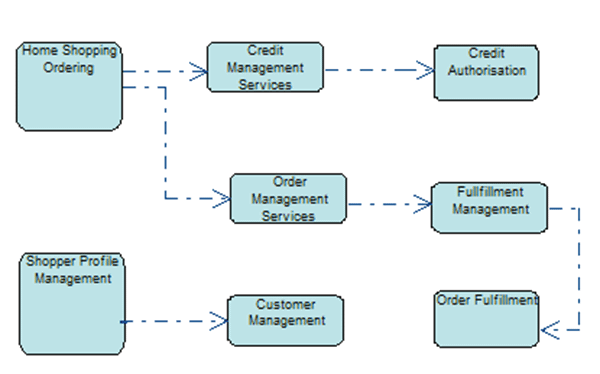
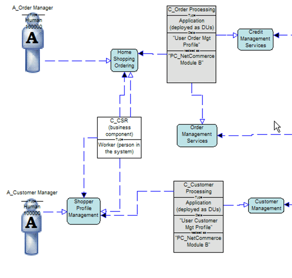
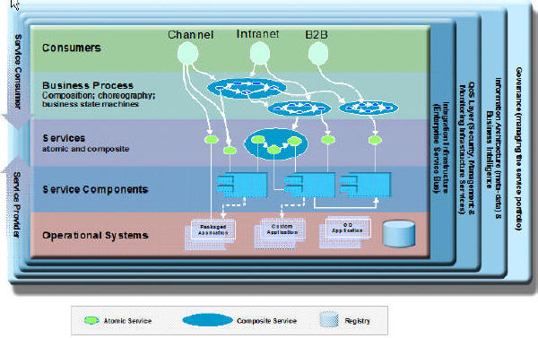

If the project involves a Service Oriented Architecture (SOA), the Team Solution Design work products may be impacted
as described below. This guideline provides an overview of the work products that are often used in a Service
Oriented Architecture. This may be simply because you are documenting what exists or because your solution will result
in a change to the SOA environment.
Impact on other work products:
-
Business Direction provides a description for the client's key goals and initiatives which are used to scope our
projects. They are also used to drive the analysis to define use cases and key services that are important to
the client.
-
Current IT Environment helps us to understand the SOA infrastructure and services that already exist and can be
reused. Work products from prior projects might have been captured to further document the Current IT
Environment.
-
Use Case Model can be used to describe an interaction with an existing or proposed service, especially a long
running, interruptible service. The Use Case can be used to drive a demo, be used in a proof of concept, or
show a walkthrough of an Architecture Overview Diagram or Operational Model.
-
Functional requirements (captured in Project Definition or, if there are many of them, Requirements Matrix) are
used as a starting point for subsystems and service components identification.
-
Non-Functional Requirements might describe availability, response time, scalability and other requirements.
These NFR's might also drive Service Level Agreements. NFRs can be discovered during a wide range of
requirements gathering and analysis activities, including those that are part of Task: Define Key
Services. NFRs can be used to properly model subsystems and components, and to support component
placement decisions that may be made during other project activities.
-
A Component Model might be used to show Service Dependencies: component relationship diagram for functional
dependencies or a sequence diagram for processing dependencies. The Component Model describes the structure
of an IT system in terms of its software components with their responsibilities, interfaces, (static) relationships
and the way they collaborate to deliver the required functionality. It is the main product documenting the
functional aspect of the architecture of an IT system.
-
If a Service Model is included, there are two views that might be helpful. The first shows the dependencies
between services. This example comes from a sample in System Architect for TeamSD which shows the dependency
between logical service templates (that is, not yet "contracted").

Figure 1. Logical Service Dependency View
This second example from SA4TeamSD shows the relationship between some of the services above and the components that
offer (provide) or request the services. This figure shows a partial view:

Figure 2. Logical Service Structure View
-
Architectural Decisions should show how the client requirements impact the SOA solution, including any services
that are to be defined or realized, such as buy, build or subscribe. Non-functional Requirements provide a
dominate role in making these decisions.
-
Architecture Overview Diagram might show services mapped to software components. The Task: Define Key
Services can provide input for this work product during the Identify Relevant
Services step. Domain Decomposition identifies functional areas that can be represented in an
enterprise view of the Architecture Overview. Existing Asset Analysis identifies specific enterprise systems
that can be key elements of the solution represented in a system or IT view. These decisions also impact the
Operational Model.

Figure 3. SOA Solution Stack
-
Operational Model: Since this artifact describes the “operational” aspect of an IT system’s architecture, it
should describe the required operational characteristics and capabilities needed to implement a Services Oriented
Architecture. This includes the infrastructure to support integration, monitoring, governance, etc.
There is also an impact on Team Solution Design tasks, including the obvious impact on tasks associated with the
creation of the above work products - most notably Refine Viability Assessment.)
-
Refine Viability Assessment often identifies risks or issues that must be resolved or at least mitigated before we
make our proposal. Sometimes we are able to resolve these concerns with a small investment like a Proof of
Technology or a Software Trial. Other times, a more substantial investment is required -- a Proof of
Concept. In a Service Oriented Architecture, part of the PoC might be accessing (consuming) services.
In a PoC, we focus on what needs to be "proved" so the services we create or modify might not need to include
capabilities that are already known. This can reduce the complexity and cost of the PoC. For example,
accessing backend applications or data sources might be very costly and time consuming with little benefit.
In a case like this, access to the backend would be "stubbed out" or simulated. When that access is via a
service, then simplifying the service is easy since the implementation is hidden from the service consumer.
Sometimes, the above work products and tasks are not enough to capture the client's requirements and to describe how
your solution can address their needs. Under those circumstances, the Task: Define Key Services
and the Work Product: Service Model might help.
Acknowledgment: special thanks to Ed Calusinski for his help on this Guideline.
Mark Palmer
|